UX Research & Concept Design
Reviving Heritage.
Pune's heartbeat, etched in stone and wood, and slowly fading from the public's everyday memory.
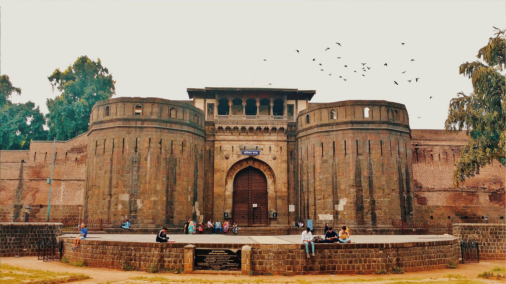
At a glance
Pune's Wadas, ancestral courtyard mansions from the Maratha Peshwa era, are quietly disappearing in plain sight. While forts get UNESCO status and temples draw crowds, Wadas remain unread chapters. We asked: how do you make a forgotten heritage feel alive again, without turning it into a theme park?
have visited a Wada but mostly only once
call preservation "extremely important"
in-person interviews across three field visits
concepts developed, 1 hero solution shortlisted
01 · The Brief
Why Wadas?
During pilot research across Maharashtra's heritage sites, we noticed a clear imbalance. Temples thrive, institutionally maintained, ritually attended. Forts have surged in cultural visibility since UNESCO's 2025 recognition of the Maratha Military Landscapes. Wadas, the centuries-old courtyard homes that once shaped the social fabric of Peshwa Pune, sit in between, too domestic to be monuments, too neglected to be tourism.
So we picked the underdog. Not because they're prettier, but because they're the most at-risk and the least understood.
Three reasons we chose Wadas
Hidden in plain sight. Entrances are unmarked, often shared with shops or homes, outsiders can pass them without ever knowing.
No institutional patron. Unlike forts (UNESCO) or temples (trusts), Wadas have no dedicated preservation body, splintering accountability.
A living typology, not a ruin. Many Wadas still house families, shops, or offices, the design challenge is participation, not just conservation.
02 · Process
Double Diamond, walked twice.
We structured our work along the four stages of the Double Diamond, discovering broadly, defining sharply, developing many ideas, then converging on three concepts ready to test.
01 · Discover
Field & context
Three site visits, conversations with 15+ residents, locals, caretakers and tourists across Shaniwar, Vishrambaug, Nana & Shitole Wadas.
02 · Define
Synthesis
From scattered field notes to clear personas, journeys and a sharp problem statement that the team could rally behind.
03 · Develop
Ideation
Wide-net brainstorming, structured ideation, dot voting and shortlisting to find concepts that respect the site's spirit.
04 · Deliver
Concepts
Three concepts developed in detail; one, the Wada Marathon, selected as the lead direction for prototyping.
03 · Discover
What the field told us.
We immersed ourselves in Wadas, Shaniwar, Vishrambaug, Nana and Shitole, observing how visitors moved, where they paused, what they photographed, and where they walked away.
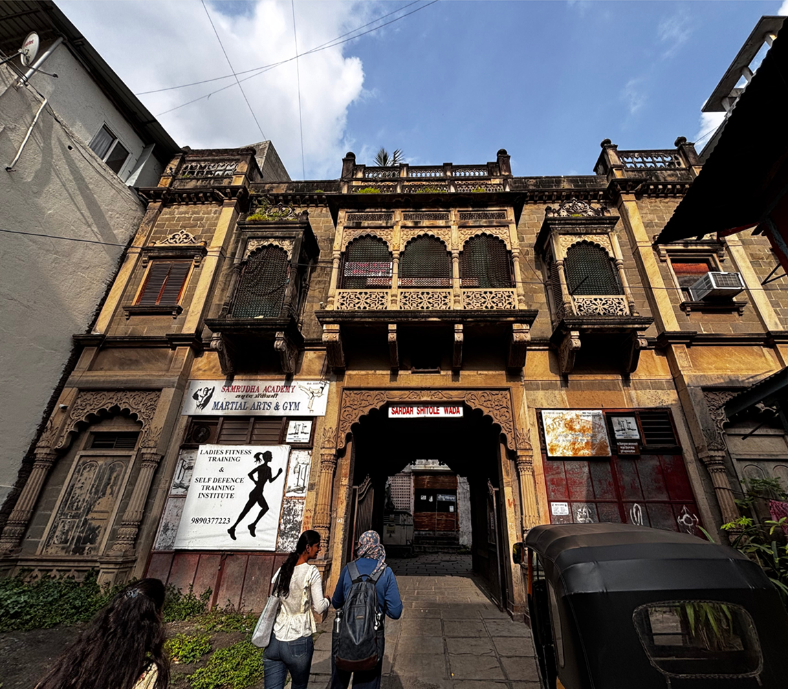
Sardar Shitole Wada
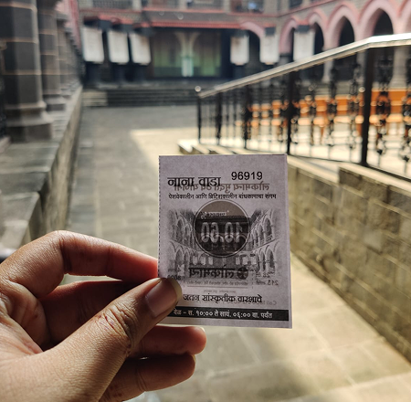
Ticket to Nana Wada
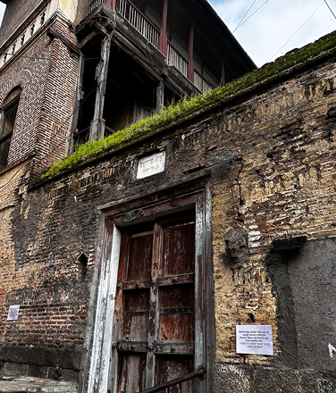
Deshpande Wada (a house)
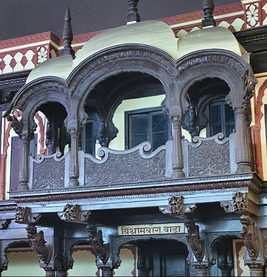
Vishrambaug Wada
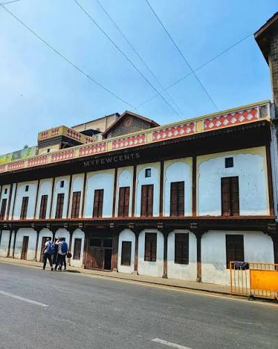
Nana Wada
Four observations that shaped everything after
01
Hidden in plain sight
Entrances are obscured or share frontage with shops and homes. Outsiders can walk right past what should be a landmark, it becomes invisible street furniture.
02
No context, no connection
Renovated wings sit beside crumbling ones with no signage or story to bridge them. Visitors glimpse history but can't read it.
03
Photos without meaning
Young visitors treat courtyards as backdrops. The architecture becomes content; the heritage becomes wallpaper.
04
Community, but quietly
Families, elders, vendors still gather inside. Wadas haven't died, they've gone underground. The community is the asset.
Survey snapshot
What people actually said.
We supplemented contextual inquiry with a bilingual (English + Marathi) survey of Pune residents and visitors. The data confirmed the following suspicions.
Top motivator
Historical importance, followed by architecture, confirming that story is the hook, not aesthetics alone.
Top friction
Poor upkeep and missing information / signage / guides, basic infrastructure, not concepts.
The surprise
Strong appetite for adaptive reuse like cafes, art galleries, community hubs, provided cultural integrity stays.
04 · Define
The people we are designing for.
We built four personas across the visitor and resident spectrum. Two of them carried the most tension and ended up steering the rest of the project.
Aarav, 23
The curious student
Goals
- Discover Pune's hidden cultural pockets between classes
- Share visit on Instagram with a story to back the photo
- Learn something he can take into design history coursework
Frustrations
- "I'm standing here and I have no idea what I'm looking at"
- No QR codes, no English-friendly context, no entry clarity
- Visits become 15-minute photo stops, not memories
Quote
"I'd come back if there was a reason to. Right now there isn't."
Mr. Joshi, 68
The neighbourhood elder
Goals
- See the Wada respected, not turned into a backdrop
- Pass stories and pride down to younger generations
- Walk through familiar courtyards without obstruction
Frustrations
- Decay, garbage, insensitive renovations
- Tourists posing without acknowledging the place's meaning
- Younger family members no longer interested in the past
Quote
"They take photos. They don't ask why the door is shaped that way."
User journey · Ganesh Utsav visit
Where curiosity dies: a tourist's journey through a Wada during Ganesh festival.
We mapped three journeys; the festival visit was the most revealing, high arrival energy, sharp emotional drop midway, awkward exit.
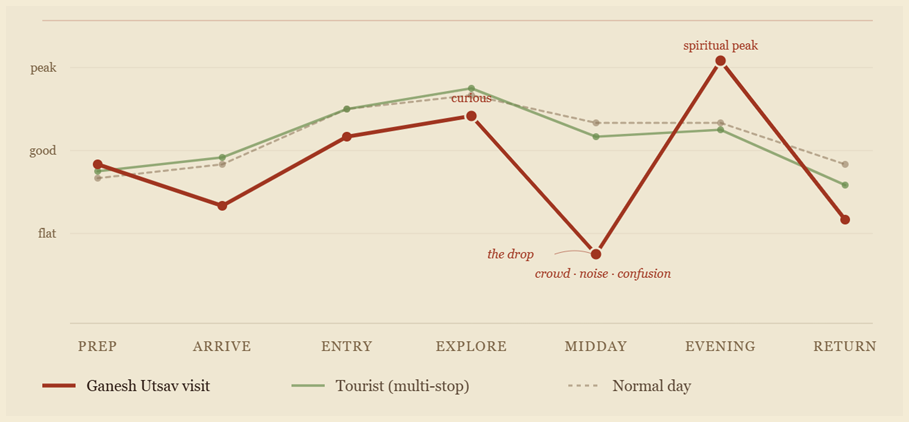
Key beats: curious at Explore · a sharp drop at Midday from crowd, noise and confusion · spiritual peak in the Evening
The problem, in one sentence
Pune's Wadas have everything heritage tourism needs, history, architecture, community, and almost nothing visitors need: context, navigation, a reason to return.
Synthesised from 15+ interviews, three field visits & survey data
05 · Reframe
How might we…
HMW 01
Create emotional connections between visitors and Wadas, not just photo opportunities?
HMW 02
Make Wadas visible in the city, discoverable to someone who didn't come looking?
HMW 03
Turn passive sightseeing into active participation, while keeping cultural integrity?
06 · Ideate
From 40 ideas to 3 directions.
We diverged wide using brainstorming, SCAMPER and analogous-domain probes then clustered, voted, and converged.
01 · 40+ ideas
Brainstorm
Open ideation across heritage, gamification, storytelling, infrastructure, digital reuse.
02 · 7 categories
SCAMPER
Substitute, combine, adapt, modify, put-to-use, eliminate, reverse, applied to the Wada experience.
03 · 9 clusters
Affinity
Grouped overlapping ideas; surfaced themes around participation, storytelling and reuse.
04 · 3 winners
Dot voting
Team voted on impact & feasibility. Three concepts emerged; Wada Marathon led.
From divergence to a shortlist
SCAMPER opened the solution space. Dot voting closed it.
SCAMPER ideation
Seven lenses to push past obvious answers
Dot voting
Ideas clustered into 7 themes; participants placed dots on what excited them most
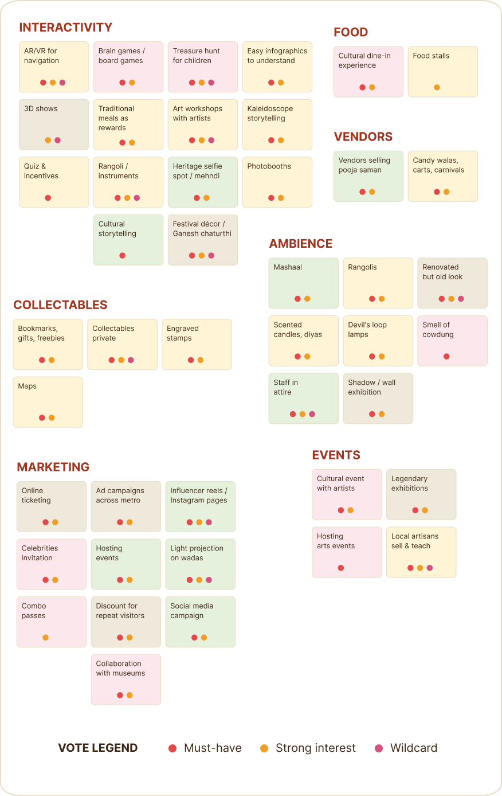
themes clustered from 50+ ideas
dot colors signaling priority & energy
07 · The Hero Concept
The Wada Marathon.
A city-wide heritage quest that turns visiting Pune's Wadas into a playful achievement journey.
Not just an app or campaign: a three layered service.
Layer 01
Physical
A charm, keychain or phone tag acts as the visitor's passport. Selfie-mirror kiosks at each Wada offer a tactile check-in moment.
Layer 02
Digital
A companion app with map, stamps, AR frames, audio stories and a growing scrapbook collage that visitors can rearrange and share.
Layer 03
Gamification
Passport, badges, hidden trails and seasonal collectibles create a loop of pride, share, return, without trivialising the heritage.
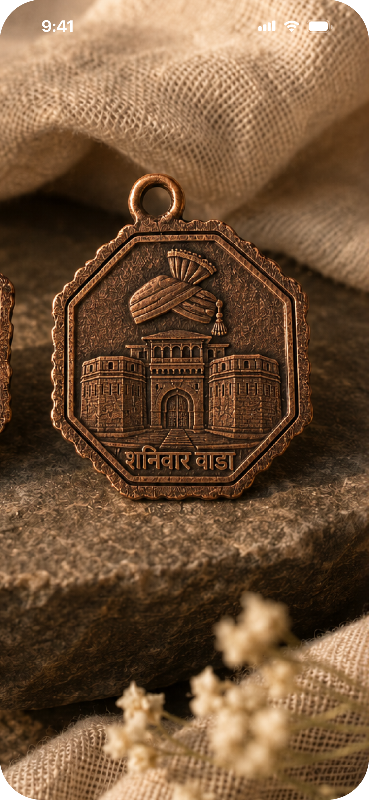
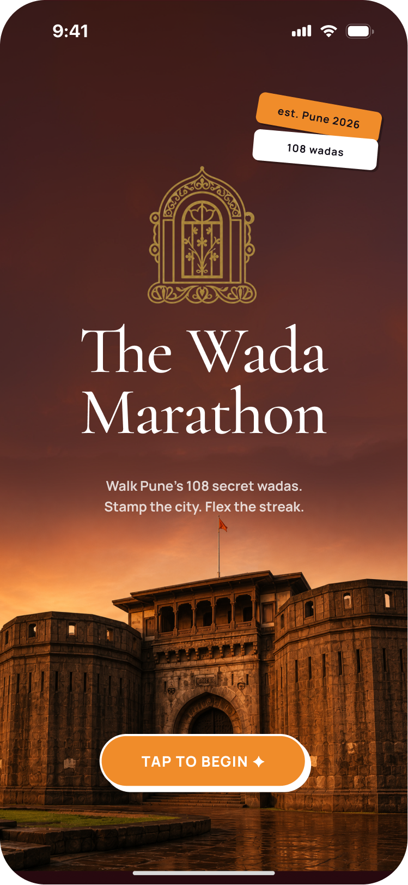
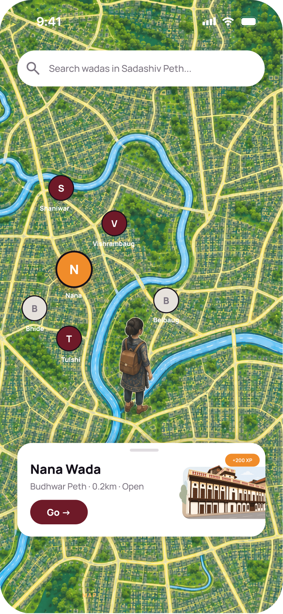
A seven-step ritual, designed to feel like joining a scavenger myth, not installing another tourism app.
Begin
The passportDownload the app or pick up a physical charm from a partner shop. Onboarding feels playful: not "create account," but "begin your trail." Your charm is your ticket, collector's item and identity link rolled into one object.
Arrive
Recognition at the gateEach Wada is a checkpoint. Tap your charm or scan a QR, the Wada "recognises" you. A short personalised welcome plays: a fragment of the building's story, calibrated to whether you're a first-time or returning visitor.
Capture
The selfie mirrorStep into a tasteful mirror frame at the entrance. The mirror or the app camera adds AR motifs from that Wada's signature carvings. Photography becomes a small ritual instead of just a backdrop habit.
Collect
Stamp the passportEach visit adds a stamp and your selfie to your digital passport, a scrapbook the app weaves into a living collage you can rearrange, narrate, and export.
Progress
Badges & unlocksAs more Wadas are visited, the collage grows and themed badges unlock, "Peshwa-era trail," "monsoon visit," "wooden carvings deep-dive." Visible markers fuel the pride, share, new-visitor loop.
Celebrate
The completion ritualFinishing a trail earns a certificate, a limited-edition charm patch, and a prompt to choose the next route, Saswad Wadas, Nashik Wadas, or seasonal festival trails.
Return
Hidden layersRevisiting a Wada reveals what wasn't visible the first time, behind-the-scenes craftsperson workshops, secret micro-trails, time-bound festival overlays. The same building, deeper each time.
The four moments that carry the experience.
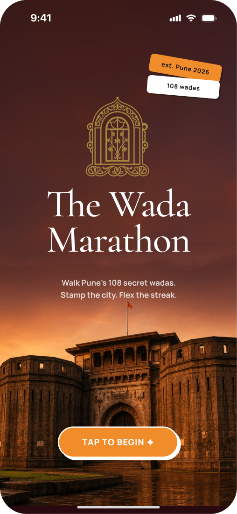
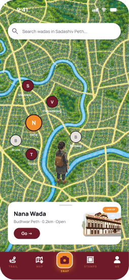
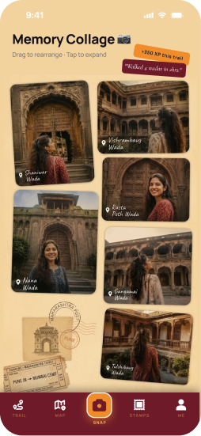
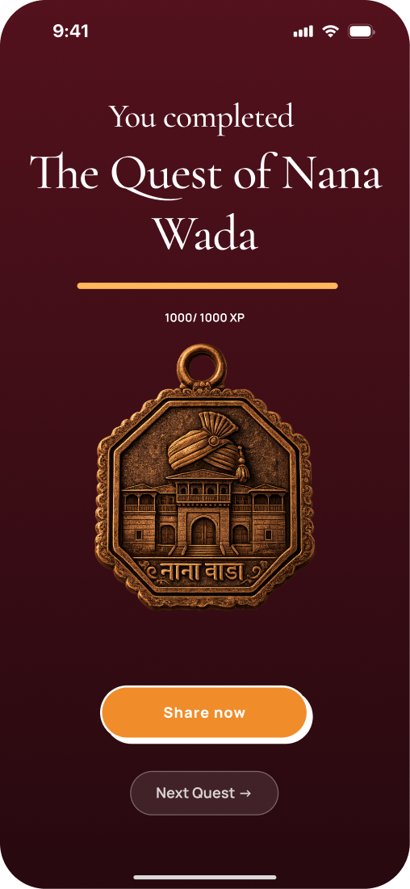
Every choice traces back to a field insight.
Insight: "I have no idea what I'm looking at."
→Charm-triggered audio stories at every Wada, narrated, not signposted.
Insight: 74% visit only once.
→Layered unlocks & seasonal trails reward return, not just first arrival.
Insight: Young visitors treat courtyards as photo backdrops.
→Selfie-mirror frames make photography a ritual that delivers story, not just takes one.
Insight: Wadas hide in plain sight.
→City-wide trail creates wayfinding the city itself never built.
Insight: Pride and ownership matter to locals.
→Physical charm and shareable collage turn visitors into ambassadors.
08 · The Other Two
What we also explored.
Two further concepts emerged from ideation. The Wada Marathon led in dot voting, but these stayed on the table as adjacent or future directions.
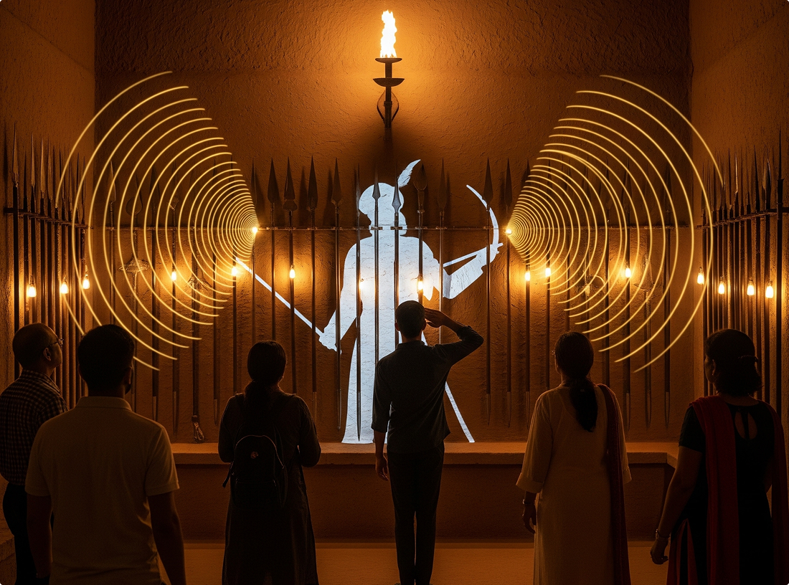
Concept 02
The Speaking Artifacts
Statues, weapons and everyday objects inside Wadas become storytellers. Gesture-activated sensors and directional speakers let an artifact narrate its own past; a salute might trigger a battle story, a namaste, a household tale.
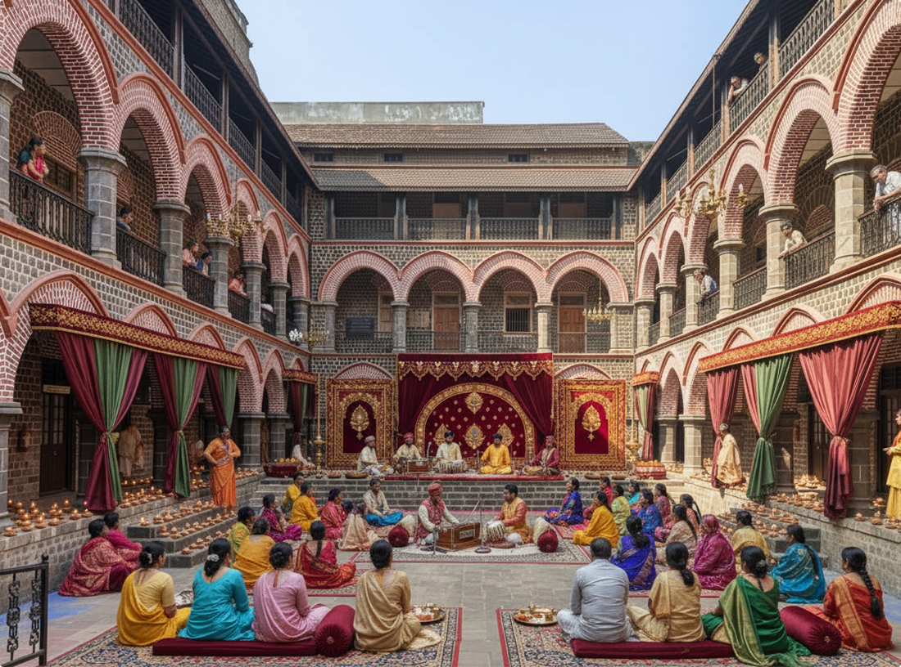
Concept 03
Mehfil at the Wada
Reactivate Wada courtyards as living cultural hubs through classical music baithaks paired with artisan workshops, pottery, weaving, miniature painting. Heritage as venue, performance and economy in one.
09 · Reflection
What this project taught us.
01
Heritage doesn't need preservation, it needs participation.
Sites that ask nothing of their visitors get forgotten. The interventions that landed were the ones that gave people a role, a charm to carry, a stamp to collect, a story to pass along.
02
The brief is hiding in the field, not the brief document.
We arrived expecting an awareness problem. We left with an engagement problem. Three visits and 15 conversations completely reframed the work, survey data alone would have led us somewhere shallower.
03
Respect first, design second.
Heritage design has a low ceiling for cleverness. Every "fun" idea had to be stress-tested against whether it would make Mr. Joshi, the neighbourhood elder, feel proud or insulted. That filter shaped every concept.
04
Phygital wins where pure digital flattens.
An app alone would have been forgettable. The charm, a small, tangible, ridiculous-on-paper object, is what turns the experience from an interaction into a memory.
Reviving heritage, one Wada at a time.
A design research project on Pune's Wadas, conducted as part of Design Methods coursework.
Team
Nidhi Patil
Rashmi Gore
Digvijay Shelar
Priyanka Wakchaure
Mentors
Assoc. Prof. Dr. Wricha Mishra
Asst. Prof. Shreyasha Aishwarya